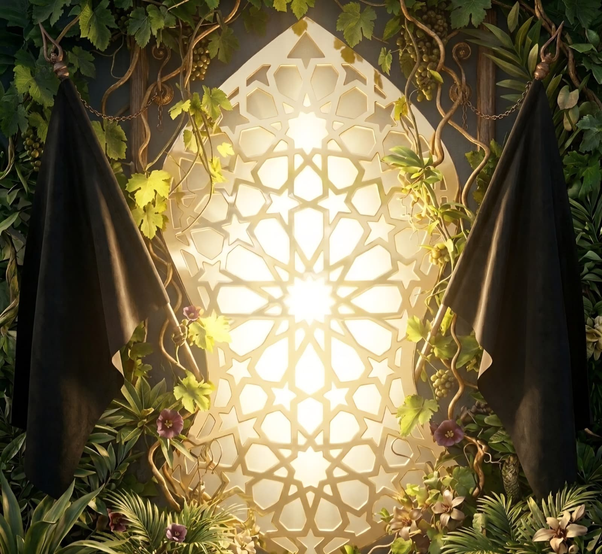

Follow the Steps
Prophet Muḥammad ﷺ
✦
⚖️ My Amalan


Times are computed on this device from your coordinates — nothing is sent anywhere. Fajr and ʿIshāʾ depend on which twilight angle your local authority uses, so pick the one your masjid follows. Treat these as a guide, not a substitute for your local timetable.
Each prayer's list holds only the duʿās its narration ties to that hour. Duʿās of need, with no fixed hour, live in the Compendium instead. Nothing here narrows what you may ask for or when.
Prophet Muḥammad ﷺ